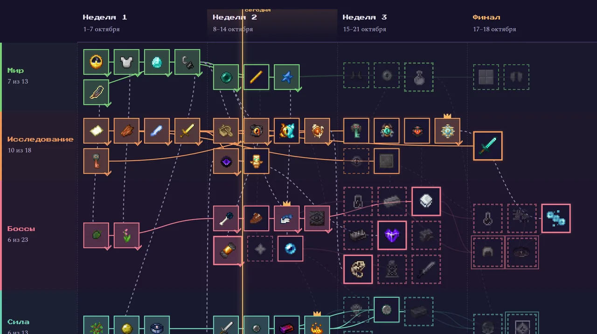

Засекречено до 1 октября
Сезон 2
21 день. Всё открыто с первой минуты. Легко не будет.
Первый сезон мы провели под землёй. Второй начнётся там, куда в первом никто не долетел, — над облаками. Кое-что уже просочилось наружу.
Утечка из сборкиНе для печати
- Модов
- 540
- Квестов
- 1136
- Рас
- 55
- Классов
- 20
- Боссов
- 34
- Дней
- 21
Модов в два раза больше, чем в первом сезоне, квестов — в три с половиной. Цифры сверены с тестовой сборкой: к старту модов может стать чуть больше или меньше.
Рассекречено
Карта сезона
157 вех в десяти путях — от первой ночи до Эндер-дракона. Каждая веха — достижение в игре, поэтому сервер сам отмечает, кто и когда её открыл. Там же командный зачёт, ивенты, бестиарий из 34 боссов, книга квестов, герои сезона и зал позора.
Прогресс появится 1 октября. А пока есть демо: так карта будет выглядеть в разгар сезона.

Перехваченные передачи
> перехват 21.09 · 23:14
…острова висят над облаками. Без опоры. На одном — храм, в храме горит свет…
> перехват 22.09 · 02:07
Луна опять красная. Закрывайте ворота. Они идут волнами, до самого утра.
> перехват 22.09 · 04:51
Шестерни держат. Корабль поднялся выше облаков. Главное — не смотреть вниз.
> перехват 22.09 · 06:30
Сегодня выбирали, кем родиться. У меня теперь жабры. Дома сухо. Это ненадолго.
> перехват ██.██ · ██:██
Если вы это читаете — старт 1 октября. Не опаздывайте, связь пропа…
Досье
Наведи на досье или нажми на него, чтобы расшифровать.
Рассекречено 8
- Досье 01Секретно
Над облаками
Выше облаков есть земля: острова без опоры, храмы и те, кто их охраняет. Дверь туда — рамка, которая светится.
- Досье 02Секретно
Машины
Шестерни, поезда, реакторы и цифровые склады. А потом — пропеллеры и воздушные шары. Ваши машины оторвутся от земли.
- Досье 03Секретно
Кем родиться
В первый день каждый выбирает расу: крылья, жабры, чешуя или тень. У каждой свои силы — и свои слабости.
- Досье 04Секретно
Путь героя
Двадцать классов и ветки навыков. Оружие с редкостью, камнями и случайными свойствами. Мечи научатся комбо, а ты — перекатам.
- Досье 05Секретно
Красная луна
Иногда луна краснеет, и ночь становится длинной. А иногда они приходят сами — волнами, до утра. Стены лучше строить заранее.
- Досье 06Секретно
Команды и золото
Своя команда, общая земля и общий прогресс. Каждый босс, мир и победа — очки в зачёт. И монеты, за которые продаётся почти всё.
- Досье 07Секретно
Ивенты
Гонка дирижаблей там, где раньше летали только птицы. Неделя охоты на боссов. Турнир на арене. Финал — 17–18 октября.
- Досье 08Секретно
Магия
Книги заклинаний, школы магии, руны и призыв духов. А шесть рас — маги от рождения: огонь, вода, земля, воздух, гравитация и тьма.
Ещё засекречено 4
Три досье откроются сами — 26, 28 и 30 сентября — и переедут наверх. Последнее ждёт старта.
- Досье 09Секретно
Гильдии
Откроется позже.
- Досье 10Секретно
Флот
Откроется позже.
- Досье 11Секретно
Первая ночь
Откроется позже.
- Досье 12Совершенно секретно
████████
Об этом нельзя рассказывать до старта сезона, даже намёком.
Кем ты родишься?
В первый день каждый выбирает расу — одну из 55 — и класс — один из 20. Шесть рас крупным планом, остальные в полном списке ниже. Описания — по текстам самого мода.
- Путь эволюции. После 1000, 2500 и 5000 побеждённых мобов раса усиливается, а на третьей ступени выходит на апекс.
- Место рождения. Морские расы появляются в океане, Блейзлинг — в Незере, Эндерианец — в Энде. Остальные — на обычном спавне.
- Выбор надолго. Передумать можно только сферой происхождения: первый раз бесплатно, дальше за уровни опыта.
Все 55 рас по стихиям, с силами и слабостями
Небо и ветер 5
Вода 5
Огонь и Незер 6
Энд и пустота 5
Тьма и нежить 10
Земля, камень и лес 10
Малые, звери и механизмы 7
Боевые искусства 6
Без особенностей 1
И класс — один из 20
Нажми на класс, чтобы узнать, что он умеет.
Выбери расу и класс — запомним на этом устройстве, а 1 октября проверим, повезло ли с судьбой.
Они ждут
- Королева валькирийПравит островами над облаками. Не любит, когда её будят.
- Солнечный духЖивёт в храме выше всех. Горячий приём гарантирован.
- ЛевиафанГлубоко под водой кто-то очень большой ждёт, когда вы спуститесь.
- ИгнисРыцарь в доспехах из огня. Проверит, из чего сделано ваше оружие.
Это четверо из 34. Остальные — в бестиарии на карте сезона: где искать, что с них падает и кто победил первым.
Было → будет
| Сезон 1 | Сезон 2 | |
|---|---|---|
| Модов | 262 | 540 |
| Квестов | 322 | 1136 |
| Длится | 8 дней | 21 день |
| Играем | каждый сам за себя | командами, с общим зачётом |
| Кем играть | человеком | 55 рас и 20 классов |
| Небо | пустое | обитаемое |
| Главный злодей | Паук-мотылёк | узнаете 1 октября |
| Поймано рыбы | 0 | посмотрим |
Три недели и финал
Три командных испытания по календарю сервер считает сам, а в финальные выходные — два живых ивента. Места приносят команде 150, 90 и 50 очков, участие — 20.
- 1.10СтартНовый мир, выбор расы и класса, первая ночь.
- 1–3.10Стартовый рывокКакая команда откроет больше вех за первые три дня.
- 8–14.10Охота на боссовБольше всех первых побед над боссами за неделю.
- 15–21.10Книжный марафонБольше всех квестов книги за неделю.
- 17.10Гран-при дирижаблей20:00 МСК. Экипажи до трёх человек, трасса над облаками.
- 18.10Турнир арены20:00 МСК. Бои команд на выбывание, в финале 3×3.
- 21.10ИтогиКомандный зачёт, герои сезона и зал славы.
А весь сезон идёт гонка к дракону: кто первым освободит Энд. Правила и живой зачёт — на карте сезона.
Ветераны первого сезона, наигравшие больше 10 часов, уже в вайтлисте.
Как это устроено
Мы не держим один мир годами. Каждый сезон — отдельная история: с началом, финалом и итогами.
- Сезоны
- Каждый сезон начинается с чистого мира и идёт от одной до трёх недель. В конце — финал, итоги и зал славы, а мир мы выкладываем на скачивание.
- Вайтлист
- Заходят только те, чью заявку одобрил AliveEnjoyer. Гриферов нет, потому что их некому пустить.
- Зрители стримеров
- Играют зрители Twitch-каналов, где AliveEnjoyer модератор. Иногда заходят и сами стримеры.
- На русском и с голосом
- Каждую сборку переводим на русский. Голосовой чат со звуком в пространстве: в пещере эхо, за стеной тише.
Как попасть во второй сезон
- Подай заявку. Форма ниже. Ник пиши точно как в TLauncher, с теми же большими и маленькими буквами. Ветеранам первого сезона, наигравшим больше 10 часов, заявка не нужна: вы уже в вайтлисте.
- Дождись ответа. Заявки читает AliveEnjoyer и отвечает туда, куда ты укажешь. Новости сезона — в Discord.
- Установи сборку. Нужен только TLauncher: NeoForge, моды, русский перевод и шейдеры установщик поставит сам, в один клик. Скачать и установить — чуть ниже.
- Заходи 1 октября в 00:00 МСК. При первом запуске сборка попросит придумать пароль: он защищает твой ник, игра его запомнит, и дальше вход автоматический. Потом жми «Играть на сервере» в главном меню. Квесты и моды на русском.
- Загляни на карту сезона. Там видно, с чего начать, какие вехи уже открыты и как идёт командный зачёт.
Сборка второго сезона
Minecraft 1.21.1 и NeoForge, больше пятисот модов, русский перевод, шейдеры и наше главное меню. Ставится одной кнопкой поверх TLauncher.
Версия от 26 сентября: руководства Industrial Foregoing и PneumaticCraft на русском, с рецептами прямо в книге; в EMI снова видны рецепты PneumaticCraft, Reliquary и кузнечные рецепты Apotheosis. Сборка уже стоит? Скачай архив заново и снова запусти УСТАНОВИТЬ.cmd: установщик обновит её поверх, миры и настройки игры останутся.
- Распакуй архив. Правой кнопкой по архиву → «Извлечь всё…».
- Запусти УСТАНОВИТЬ.cmd. Он сам положит сборку в папку игры, поставит NeoForge, выберет его в TLauncher и выделит игре память. Твои старые моды не пропадут: они переедут в резервную копию. Если Windows спросит, запускать ли файл, — «Запустить» или «Подробнее» → «Выполнить в любом случае».
- Открой TLauncher и нажми «Войти в игру». Ник — как в заявке. Первый запуск долгий, 3–5 минут: докачиваются звуки и Java.
Нужны Windows 10 или 11, 16 ГБ оперативной памяти в компьютере и 5 ГБ на диске. Если архив не качается, включи VPN: у части провайдеров в России наш сервер без него недоступен. Сборка первого сезона не подойдёт. Подробная инструкция лежит в архиве.
Правила
- Не ломай и не забирай чужое. Хочешь строить рядом с чужой базой — спроси хозяина.
- Никаких читов, иксрея и модов, которые дают преимущество. Играем на нашей сборке.
- Уважай людей в чате и в голосе. Розыгрыши только над теми, кто не против.
- Далёкие походы через порталы в неразведанные земли лучше делать, когда онлайн мало: генерация нового мира подвешивает сервер для всех.
- Спорные вопросы решает AliveEnjoyer.
Заявка на второй сезон
Заявки читает AliveEnjoyer. Ник пиши точно так же, как в игре, с теми же большими и маленькими буквами. Вопросы можно задать в Discord.
Архив · 11–19 сентября 2026
Сезон 1 · Whispers in the Void Закрыт
8 дней под землёй, 14 игроков, 492 смерти и ни одной пойманной рыбы.
Первый сезон шёл на нашей хоррор-сборке Whispers in the Void: Forge 1.20.1, 262 мода и русский перевод. В пещерах караулил Cave Dweller, в лесу ходил Сталкер, а шаги за спиной не всегда были твоими. Поэтому мы ушли под землю и построили там свой оазис.
Сезон закончился 19 сентября в 22:47, когда последний игрок вышел с сервера. Боссы, рекорды гонок, номинации и зал славы собраны на странице итогов.
Что мы построили
Базу мы вырыли в глубинном сланце: пещера на двести блоков, озеро с фонтаном, колонны гномьей кладки и двадцать четыре дерева, которые растут прямо с потолка и светятся. А в небе над заливом висят Пристань Бездны и Небесная Цитадель для гонок на мётлах. Все картинки отрисованы из настоящего мира сервера.
Скачай наш мир
Весь мир первого сезона целиком, каким мы его оставили: оазис, вокзал, усадьба, Пристань Бездны, Небесная Цитадель, дома игроков и 8 открытых измерений. Открывается в одиночной игре на сборке первого сезона.
- Поставь сборку первого сезона. В TLauncher выбери версию Forge 1.20.1 - 47.4.20, обычную, без OptiFine. Выдели игре 8 ГБ памяти, запусти один раз и закрой. Потом открой папку игры («Настройки» → «Директория») и скопируй туда все папки из архива сборки. Старую папку mods с другими модами сначала удали.
- Положи мир в saves. Распакуй архив мира и перенеси папку WhispersInTheVoid-S1 в папку saves внутри папки игры.
- Открой. «Одиночная игра» → «Whispers in the Void · Сезон 1». Мир большой, первая загрузка займёт пару минут. Координаты оазиса, Пристани и спавна лежат в README внутри архива.
Читы включены: /gamemode spectator — и можно облететь всё сквозь стены. Гонки, лобби и награды работали через сервер, поэтому трассы можно пролететь, но таймер не запустится.